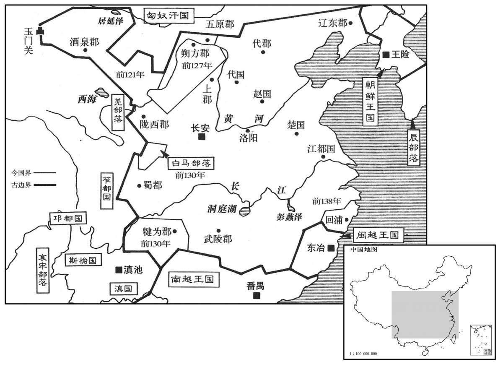

公元70年资治通鉴：本年记事、原文与白话对照
按原书编年位置阅读；追叙和史论不等于本年发生的事件。白话采用所据译本，缺译不以生成译文补齐。
卷45 · 本年记事
公元70年 · 汉显宗孝明皇帝永平十三年
十三年〔（庚午、七○）〕
本年事件索引（现代整理）

本年形势与背景参考图
夏，四月，汴渠成；河、汴分流，复其旧。〔河、汴之决坏，则汴水东侵而与河合；今堤成，则河东北入海，而汴东南入泗，是分流复其旧也。〕辛巳，帝行幸荥阳，巡行河渠，〔行，下孟翻。〕遂渡河，登太行，幸上党；〔行，户刚翻。〕壬寅，还宫。
夏季，四月，汴渠治水工程完成。从此黄河与汴水的水流分离，重新回到各自原来的河道。四月辛巳（初四），明帝出行，临幸荥阳，视察水利工程。然后渡过黄河，登上太行山，临幸上党郡。四月壬寅（二十五日），返回京城皇宫。
冬，十月，壬辰晦，日有食之。
冬季，十月壬辰晦（疑误），出现日食。
楚王英与方士作金龟、王鹤，刻文字为符瑞。男子燕广〔姓谱：燕召公之后，为秦所灭，子孙以国为氏。燕，于贤翻。〕告英与渔阳王平、颜忠等造作图书，有逆谋；事下案验。〔下，遐稼翻。〕有司奏「英大逆不道，请诛之。」帝以亲亲不忍。十一月，废英，徙丹阳冱县，〔贤曰：今宣州县。〕赐汤沐邑五百户；〔贤曰：汤沐者，取其赋税以供汤沐之具也。〕男女为侯、主者，食邑如故；许太后勿上玺绶，留住楚宫。〔许太后者，英母许氏。上，时掌翻。〕先是有私以英谋告司徒虞延者，〔先，悉荐翻。〕延以英藩戚至亲，不然其言。及英事觉，诏书切让延。
楚王刘英和方士制作金龟、玉鹤，刻上文字，用作将为皇帝的天赐凭证。有个叫燕广的男子，告发刘英与渔阳人王平、颜忠等编造符谶之书，蓄谋造反。朝廷将此事下交有关部门追查核实。主管官员上奏道：“刘英大逆不道，请将他处死。”明帝因手足之亲而不忍批准。十一月，废掉刘英王位，将他迁往丹阳郡泾县，赏赐五百户赋税。刘英的儿子女儿当侯、当公主的，依旧享用原有食邑。命刘英的母亲许太后不必上交她的印玺印绶带，留在楚王宫中居住。先前，曾有人暗中将刘英的逆谋告诉司徒虞延，但虞延认为刘英是明帝手足至亲，不相信密报。及至刘英逆谋暴露，明帝下诏严厉责备虞延。